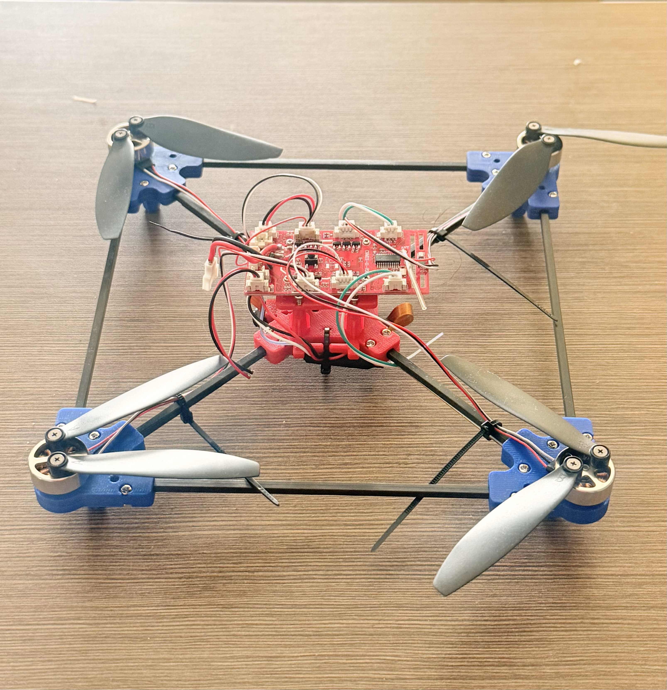
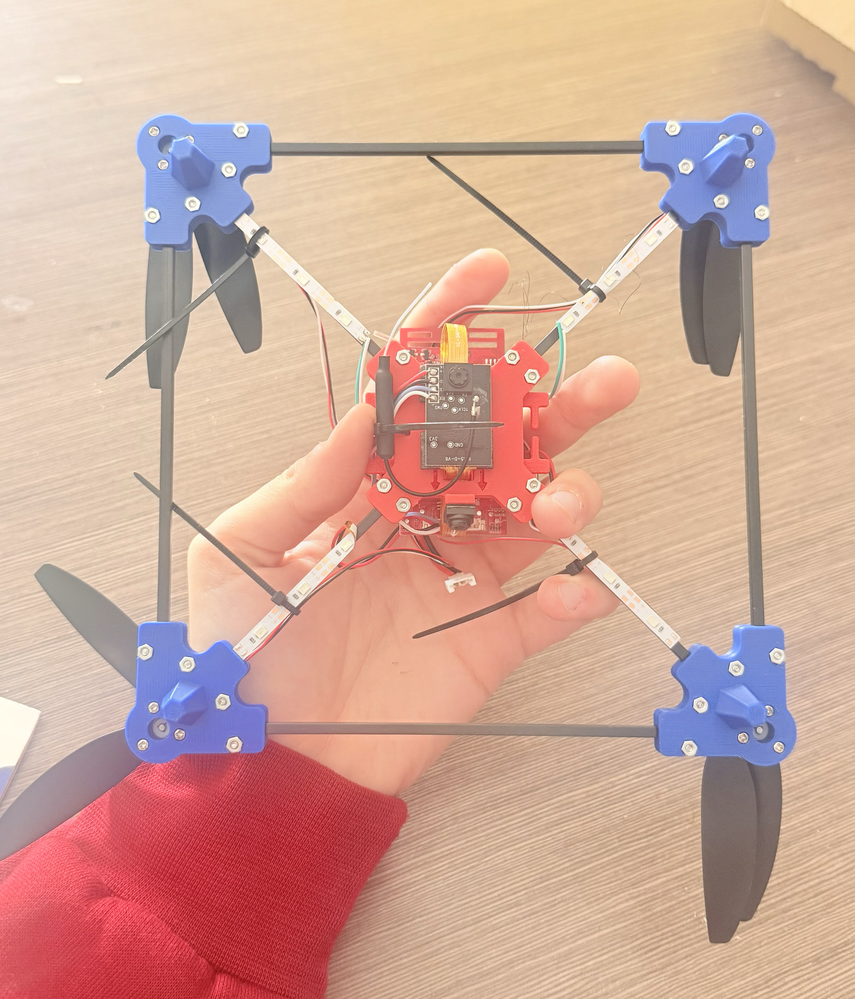
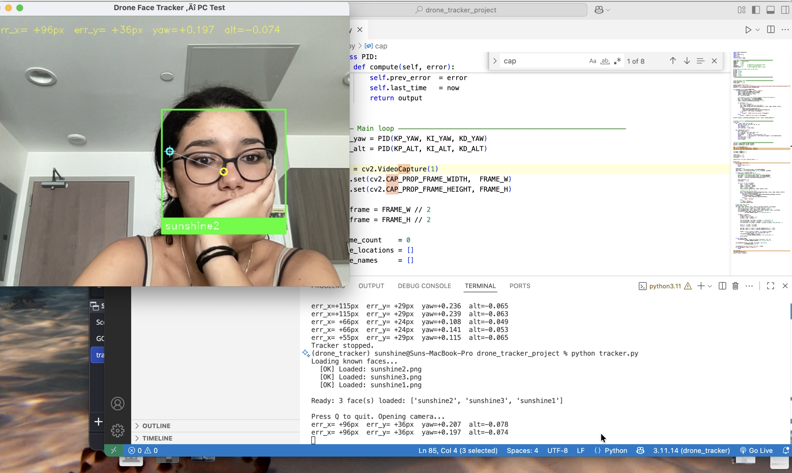
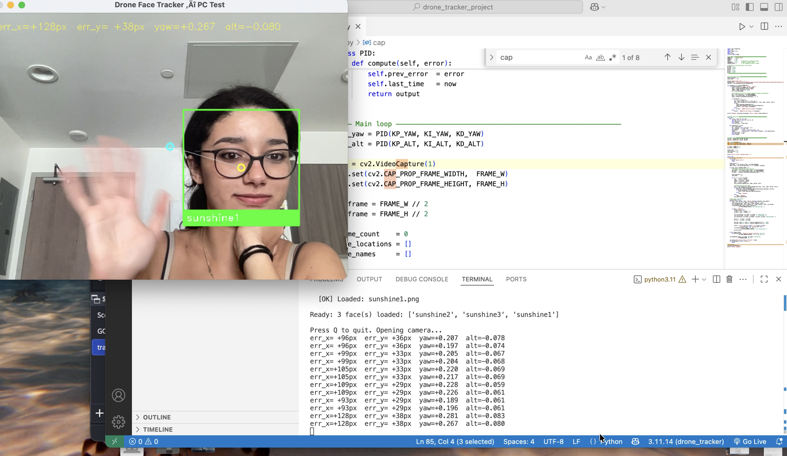

Python · Computer Vision · Embedded Systems · 2026
Tracking Drone
Overview
A face-tracking quadrotor that identifies a specific person using computer vision and follows them autonomously. The software stack — built in Python using OpenCV, dlib, and the face_recognition library — detects faces in real time, matches them against a set of known encodings, and computes dual-axis PID control signals to keep the target centred in frame. The drone then executes those commands via a MAVLink flight controller.
The project is structured in three phases: Phase 1 — build and verify the full vision and control pipeline on a MacBook; Phase 2 — port to a Raspberry Pi 4 mounted on the drone frame and run the first tethered flight; Phase 3 — design a custom frame in Fusion 360 with an integrated electronics bay and gimbal mount. Phase 1 is complete as of May 10, 2026.
Live webcam tracking verified on Apple Silicon macOS — face detected, identity matched, green/red bounding boxes drawn, and PID control values computed and printed in real time every frame.
The Hardware
The drone frame is assembled and ready. A Raspberry Pi 4 will be mounted to the frame as the onboard compute unit, running the vision and control pipeline. A camera module will feed live frames into the tracker. The Pi communicates with the flight controller over UART using the MAVLink protocol via dronekit, replacing the PID print statements with actual velocity commands.

Front — assembled drone frame, propellers and motors mounted.

Back — flight controller and wiring visible. Raspberry Pi mount point planned above.
Software Stack
The vision pipeline runs entirely in Python. Each frame from the camera is downscaled for speed, passed through OpenCV's Haar Cascade for fast face detection, then each detected face region is encoded into a 128-dimensional vector by face_recognition's ResNet model. That vector is compared against pre-loaded encodings of the target person using Euclidean distance. Faces below the tolerance threshold are labelled as the target; all others are flagged as unknown.
A dual-axis PID controller computes yaw and altitude commands from the pixel offset between the face centre and the frame centre. The sign convention maps directly to MAVLink: positive yaw turns right, negative turns left; positive altitude climbs, negative descends. In Phase 1 these values are printed to the terminal. In Phase 2, the single-line change replaces print(status) with a dronekit MAVLink velocity command.
| Library | Role |
|---|---|
| OpenCV | Camera capture, Haar Cascade face detection, frame annotation, bounding box rendering |
| dlib | 68-point facial landmark mapping; prerequisite for face_recognition encoding |
| face_recognition | 128-d ResNet face encoding; Euclidean distance comparison against known encodings |
| NumPy | Array operations underlying all vector arithmetic and PID calculations |
| dronekit (Phase 2) | MAVLink interface — sends velocity commands to flight controller over UART |
Phase 1 — Live Tracker Demo
The tracker ran live on a MacBook webcam for the first time on May 10, 2026. Three reference photos of the target were encoded and loaded into memory at startup. The system then processed the webcam feed in real time — a green bounding box drawn around the target face when recognised, a red box around any unrecognised face, a yellow crosshair at the frame centre, and a cyan crosshair at the detected face centre. The distance between those two crosshairs is the tracking error the PID controller works to eliminate.
The terminal prints live control values on every frame: err_x=+47px err_y=-12px yaw=+0.094 alt=-0.024. These are the exact values that will be passed to the flight controller in Phase 2.

Live tracker running in VS Code — target identified as Sunshine2. Green bounding box active even with partial occlusion.

Target identified as Sunshine1 — full face visible, recognition confident. Yellow and cyan crosshairs mark the error vector the PID controller is correcting.
Environment Debugging — Apple Silicon
Getting the software stack running on Apple Silicon macOS required diagnosing and resolving four compounding failures that are not documented anywhere as a single known issue. Each was solved from first principles by reading error traces and reasoning through the fix.
dlib compile failure on macOS Tahoe. dlib 20.0.1 cannot compile on AppleClang 17 because fp.h was removed from the new Xcode SDK. Fixed by installing a pre-built ARM64 binary via conda-forge, bypassing compilation entirely.
dlib HOG detector runtime crash on Apple Silicon. Even with a correctly formatted image, dlib's HOG face detector crashes at runtime due to a memory layout bug in the conda-forge binary. Fixed by substituting OpenCV's Haar Cascade for face detection while retaining face_recognition for encoding only.
setuptools 82 pkg_resources removal. setuptools 82+ removed pkg_resources, breaking face_recognition_models. Fixed by patching the file to use Python's built-in importlib.resources instead — a one-command monkey-patch applied from the terminal.
PATH conflict between system Python and conda. System Python 3.13 intercepted pip commands even with the conda environment active, due to PATH ordering. Fixed by prepending the conda environment bin directory to ~/.zshrc permanently.
None of these failures had a single clean solution online. Each required reading the actual error trace — not just the summary message — and understanding what it meant at the system level. The most transferable outcome of Phase 1 is not the code, but the process of debugging an unfamiliar stack under real constraints.
Project Status